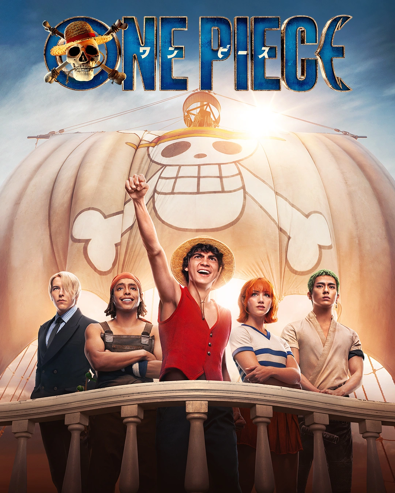
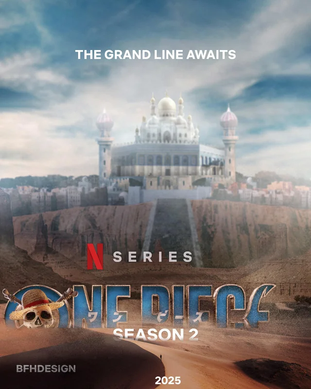

El Viaje de los Sombrero de Paja
Explora todas las temporadas de la adaptación en acción real
Temporada 1 (2023)
Disponible

8 Episodios
Estreno: 31 de Agosto, 2023
Plataforma: Netflix
Arcos Adaptados:
- Shells Town (Episodios 1-2)
- Baratie (Episodios 3-4)
- Arlong Park (Episodios 5-8)
Momento Destacado: La batalla de Luffy contra Arlong
Temporada 2 (Próximamente)
En Producción

Episodios: Por confirmar
Estreno estimado: 2025
Plataforma: Netflix
Arcos Probables:
- Arabasta
- Skypiea
- Otros arcos de East Blue
Lo más esperado: La introducción de Chopper
Línea de Tiempo de Producción
2020
Anuncio Oficial
Netflix anuncia la adaptación en acción real de One Piece
2021
Casting Principal
Se revelan los actores para Luffy, Zoro, Nami, Usopp y Sanji
2022
Filmación
Rodaje principal en Sudáfrica
2023
Lanzamiento Temporada 1
Estreno mundial el 31 de agosto
2024
Renovación para Temporada 2
Netflix confirma segunda temporada